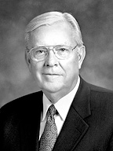

WEB Fundamentals
WDD 130
Sharing the Gospel Online
Overview
- Task: Read Elder Ballard's “Sharing the Gospel Using the Internet”. After reading this talk, you should start the quiz.
- Purpose: To help students understand the importance of using the internet to share the gospel, and realizing our responsibility to share the gospel as well.
Background
Technology is part of the increased light of the restoration and we should look to the Lord's apostles and prophets for guidance. They will teach and encourage to use technology to further the work of the Lord.
Instructions
-
Read
Read Elder Ballard's talk: Sharing the Gospel Using the Internet.

-
Ponder
After reading Elder Ballard's talk, think about the following question, "What are our responsibilities as Latter-day Saints in regards to sharing the gospel through the internet?"
-
Prove
Go to the LDS Online Responsibilities Article Quiz and respond to what you learned.